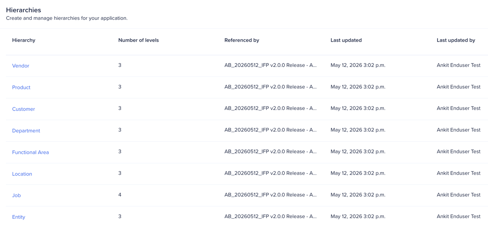
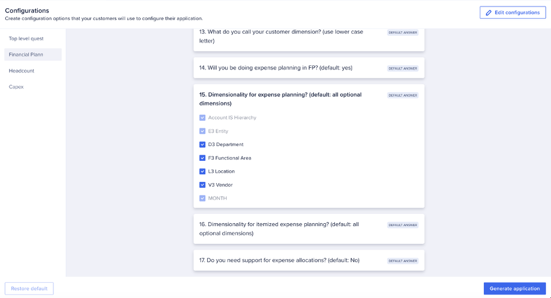

Application Framework Configurator
Was der Application Framework Configurator steuert und wie Sie alle 44 Konfigurationsfragen navigieren
Dies ist eine automatische Übersetzung der englischen Originalfassung. Die maßgebliche und aktuellste Version finden Sie hier auf Englisch.
Was der Application Framework Configurator ist
Der Application Framework Configurator ist die zentrale Oberfläche für alle IFP-Konfigurationsentscheidungen. Er präsentiert 44 Konfigurationsfragen in drei Kategorien: Top-Level-Fragen (23), Financial-Planning-Konfigurationen (17) und Headcount-Konfigurationen (3), plus zusätzliche Einstellungen. Die Antworten auf diese Fragen bestimmen, was generiert wird — Modul-Struktur, Listen-Hierarchien, Formel-Logik und Verfügbarkeit der Planungsmethoden.
Der Application Framework Configurator wird über eine spezifische URL aufgerufen: Ersetzen Sie „home" in Ihrer Anaplan-Home-URL durch „applications" (nicht über die normale Workspace-Navigation, die den Applications-Link in v2.1.0 noch nicht zeigt). Wenn Ihre Anaplan-Home-URL z. B. „https://us1a.app.anaplan.com/home" ist, ändern Sie sie zu „https://us1a.app.anaplan.com/applications". Sobald die App die allgemeine Verfügbarkeit erreicht, erscheint dieser Link in der Standard-Navigation.
Bevor Sie Konfigurationsänderungen vornehmen, generieren Sie die Applikation zuerst mit allen Standardeinstellungen. Das gibt Ihnen eine Basis-Kopie — ein Modell, in dem alle Formeln korrekt generiert wurden, mit Standard-Hierarchienamen und unveränderten Standard-Dimensionen. Wenn Sie später einen Formelfehler in Ihrer konfigurierten Generierung erhalten, können Sie die korrekte Formel in der Basis-Kopie nachschlagen und übernehmen. Beschriften Sie diese Generierung eindeutig (z. B. „Base — no changes").
Sobald Sie die Generierung starten, können viele strukturelle Entscheidungen nicht mehr ohne Neugenerierung des Modells geändert werden. Hierarchie-Ebenen, Entity-Struktur und Geografie-Konfiguration müssen vor der Generierung festgelegt sein. Klären Sie diese in Session Zero — sie sind später am schwersten zu ändern.
Application Framework Configurator Übersicht (v2.1)

Konfigurationsabschnitte
Hierarchies
Der Abschnitt „Hierarchies" definiert die Dimensionsstruktur des generierten Modells. Die hier getroffenen Entscheidungen wirken sich auf jedes Modul aus und können nach der Generierung nicht ohne vollständige Neugenerierung geändert werden.
- Location: Wie viele Ebenen? (z. B. Global → Region → Country → City). Welche Ebenen sind Planungsebenen, welche nur Aggregationsebenen?
- Functional Area: Welche Funktionsbereiche sind im Scope? (Gross Profit, OpEx, Headcount, Balance Sheet). Jeder aktivierte Bereich erzeugt zusätzliche Module.
- Entity: Wie viele Entity-Ebenen? Was ist die oberste Konsolidierungs-Entity?
- Product: Wird Planung auf Produktebene benötigt? Ebenen der Produkthierarchie?


Top-Level-Fragen (23 Fragen)
Die Top-Level-Fragen haben den größten Einfluss. Sie definieren das strukturelle Skelett des IFP-Modells.
| Fragen/Fragetypen | Was es steuert | Beispielantwort |
|---|---|---|
| Wie nennen Sie Ihre X-Dimension? (Großbuchstaben verwenden) | Die Objekterstellung kann case-sensitive sein. Bestimmte Objekte werden mit dem ersten Buchstaben groß geschrieben angelegt. | Entity |
| Wie nennen Sie Ihre X-Dimension? (Kleinbuchstaben verwenden) | Die Objekterstellung kann case-sensitive sein. Bestimmte Objekte werden angelegt, wenn der Name komplett kleingeschrieben ist. | entity |
| Werden diese generierten Applikationen für Demo-Zwecke genutzt? | Wenn ja, werden bestimmte Saved Views und Action-Objekte erzeugt, die zum Befüllen von Demodaten genutzt werden können. | Yes / No |
| Benötigen Sie Multi-Currency-Unterstützung? | Wenn ja, wird eine „Reporting Currency"-Liste und die Logik zur Umrechnung der lokalen Entity-Währung in die Reporting Currency erzeugt. | Yes / No |
| Werden Sie die Bilanz in FP planen? | Bestimmt, ob Balance-Sheet-Reporting benötigt wird. | Yes / No |
| Benötigen Sie Cash-Flow-Reporting? | Bestimmt, ob Cash-Flow-Reporting benötigt wird. | Yes / No |
| Wie betreiben Sie Headcount Planning? | Identifiziert, ob die Hauptlogik der Headcount-Planung im IFP-Headcount-Planning-Modell oder in einem externen Modell (z. B. WFB / OWP) liegt. | Dropdown-Auswahl: „Use the IFP Role-based headcount model" |
| Wie betreiben Sie Capital Expense Planning? | Identifiziert, ob die Hauptlogik des Capital-Expense-Planning im IFP-CapEx-Planning-Modell oder in einem externen Modell liegt. | Use the Capital Expense model |

Financial-Planning-Konfigurationen (17 Fragen)
Financial-Planning-Konfigurationen steuern die verfügbaren Planungsmethoden, Headcount-Einstellungen und OpEx-Verhalten. Diese sind weniger strukturell als die Top-Level-Fragen, beeinflussen aber dennoch die Formelgenerierung.
| Fragen/Fragetypen | Was es steuert | Beispielantwort |
|---|---|---|
| Wie nennen Sie Ihre X-Dimension? (Großbuchstaben verwenden) | Die Objekterstellung kann case-sensitive sein. Bestimmte Objekte werden mit dem ersten Buchstaben groß geschrieben angelegt. | Product |
| Wie nennen Sie Ihre X-Dimension? (Kleinbuchstaben verwenden) | Die Objekterstellung kann case-sensitive sein. Bestimmte Objekte werden angelegt, wenn der Name komplett kleingeschrieben ist. | product |
| Werden Sie Top-Down-Targets erfassen? | Bestimmt, ob Top-Down-Targets im IFP-Modell erfasst werden. Wenn ja, werden die dazugehörigen Objekte erzeugt. | Yes / No |
| Dimensionalität für Y? | Diese Fragen bestimmen das „Applies To" beim Aufbau der Modul-Strukturen für Sub-Prozess Y. Optionale Dimensionen müssen abgewählt werden, wenn Dimension Y nicht genutzt wird. | Checkboxen, um optionale Dimensionen zu aktivieren oder deaktivieren. Erforderliche Dimensionen sind gesperrt und können nicht bearbeitet werden. |
| Wie werden Sie Margin Planning betreiben? | Bestimmt, ob Margin Planning in einem IFP-Modell oder einem externen Modell durchgeführt wird. | Dropdown-Auswahl: „in IFP only" |
| Werden Sie Aufwandsplanung in FP betreiben? | Bestimmt, ob Objekte für die Aufwandsplanung erzeugt werden müssen. | Yes / No |
| Benötigen Sie Unterstützung für Aufwandsallokationen? | Wenn ja, erzeugt AAF Objekte, die die OpEx-Allokationslogik unterstützen. | Yes / No |

Konfigurationsfragen (v2.1-Neuerungen)

- Neue „Top-Level-Fragen"
- Werden diese generierten Applikationen für Demo-Zwecke genutzt (Standard: no)
- Wenn no, werden alle Objekte, die für Demos genutzt wurden, nicht generiert.
- Restore Default: Ein Prozess-Button setzt ALLE Antworten auf die Standardwerte zurück. Das graue Kästchen dieser Fragen sollte von „CUSTOM ANSWER" zu „DEFAULT ANSWER" wechseln.
Dimensionalitäts-Einstellungen


Diese Fragen (13-17) beeinflussen das „Applies To" bei der Modulgenerierung. Der Standard hat alle optionalen Dimensionen aktiviert, da angenommen wird, dass alle Dimensionen genutzt werden. Wenn Dimensionen nicht benötigt werden, deaktivieren Sie sie.
Das Deaktivieren von Dimensionen reduziert die Komplexität der generierten Module und verbessert die Performance, indem unnötige Dimensions-Kombinationen aus den Berechnungen ausgeschlossen werden.
Wichtige Configurator-Feinheiten (aus der Delivery-Praxis)
- Hierarchie-Name und Configurator-Frage müssen übereinstimmen: In v2.1.0 sind der Hierarchie-Name im Hierarchies-Abschnitt und die Umbenennung in den Konfigurationsfragen NICHT verknüpft. Sie müssen beides aktualisieren. Dies soll in einem zukünftigen Release behoben werden.
- Keine Leerzeichen am Ende von Namen: Leerzeichen am Ende umbenannter Hierarchien haben zu Generierungsfehlern geführt. Prüfen Sie, dass Namen keine Leerzeichen vor oder nach sich haben.
- Leaf-Ebene muss unten bleiben: Beim Entfernen einer Ebene entfernen Sie die mittlere Ebene und behalten das Leaf unten. Beim Hinzufügen einer Ebene fügt das System sie unten an — ziehen Sie sie über die ursprüngliche Leaf-Ebene. Die ursprüngliche Leaf-Ebene kann nicht auf denselben Namen umbenannt werden wie die neue Ebene.
- Hierarchies und Konfigurationsfragen sind separat: Es gibt zwei Fragen pro umbenannter Dimension — eine erzeugt die Liste, eine erzeugt die Module. Die zweite ist kleingeschrieben. Sie müssen beides aktualisieren.
- Restore Default pro Hierarchie: Jede Hierarchie hat ihren eigenen „Restore Default"-Button.
- Reihenfolge Configurator vs. Hierarchies: Sie können zuerst die Hierarchies oder die Konfigurationsfragen bearbeiten — es gibt keine vorgeschriebene Reihenfolge.
- CapEx auch generieren, wenn nicht jetzt benötigt: Polaris-Module verbrauchen keinen nennenswerten Speicher, bis sie Daten enthalten. Generieren Sie CapEx jetzt, um eine zukünftige Neugenerierung zu vermeiden, falls der Kunde es später hinzufügt.
- Custom Dimensions (flache Listen) sind Erweiterungen, keine Hierarchien: Flache Listen-Dimensionen (z. B. Channel) werden nicht im Hierarchies-Abschnitt konfiguriert — sie werden als Erweiterungen nach der Generierung gebaut.
Generierungsprozess
Nachdem Sie alle Konfigurationsfragen und Hierarchie-Einstellungen abgeschlossen haben:
- Klicken Sie auf Generate in der App-Framework-Übersicht
- Geben Sie eine Beschreibung für diese Generierung ein (z. B. „Base — no changes" oder „Customer Name — 3 entity levels, no geography")
- Wählen Sie den Ziel-Workspace
- Die Generierung läuft in der Cloud — ca. 20–40 Minuten. Verfolgen Sie den Fortschritt auf der Haupt-/applications-Seite und nicht innerhalb des App Frameworks (die Statusanzeige im Framework kann hinterherhinken)
- Bei Abschluss erscheinen alle Elemente grün. Rote Elemente sind Fehler. Bernsteinfarbene sind Warnungen.
- Error Log überprüfen. Siehe Abschnitt „Error Log Überprüfung" für weitere Hinweise.
Vor der Übung
Bevor Sie das App Framework für Ihren Kunden konfigurieren, identifizieren Sie die wichtigen Scope-Fragen: Entity-Ebenen, Geografie-Struktur, Funktionsbereiche im Scope und besondere Konfigurationen. Klären Sie mehrdeutige Entscheidungen mit dem Kunden, bevor Sie beginnen.